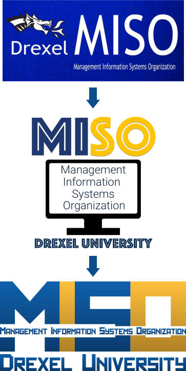

Management Information Systems Organization (MISO):
Graphics & Marketing Materials
When I was the Marketing Director of the Management Information Systems Organization, I made the graphics and promotional materials the club used. These are a few examples of the things I made from when I joined in 2016 to when I graduated Drexel in 2019.
This is the banner the organization prints out to use at promotional events
This is the progression of logos the organization has had, with the second and third made by me
These are a couple of variations on the MISO logo. The first has Drexel University removed, the second is just the letters of MISO (with no cut-through), and the third is the logo with no gradient.

Here are some ads I did for a few MISO events and workshops: